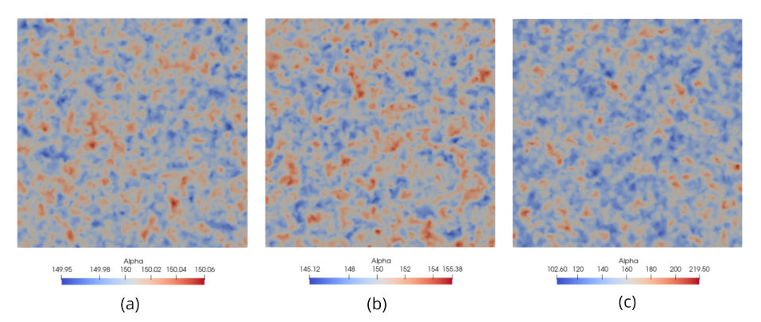
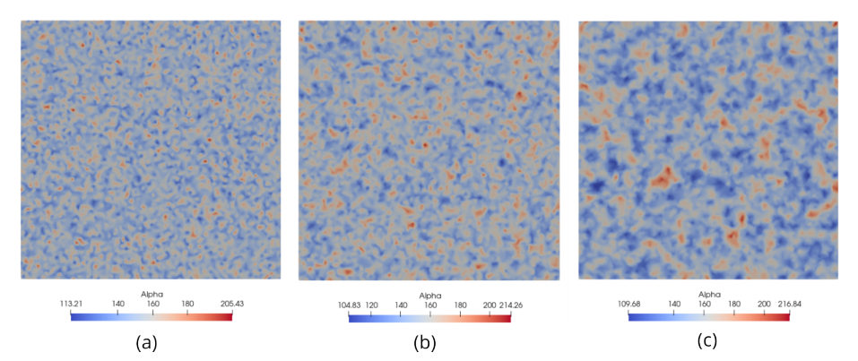

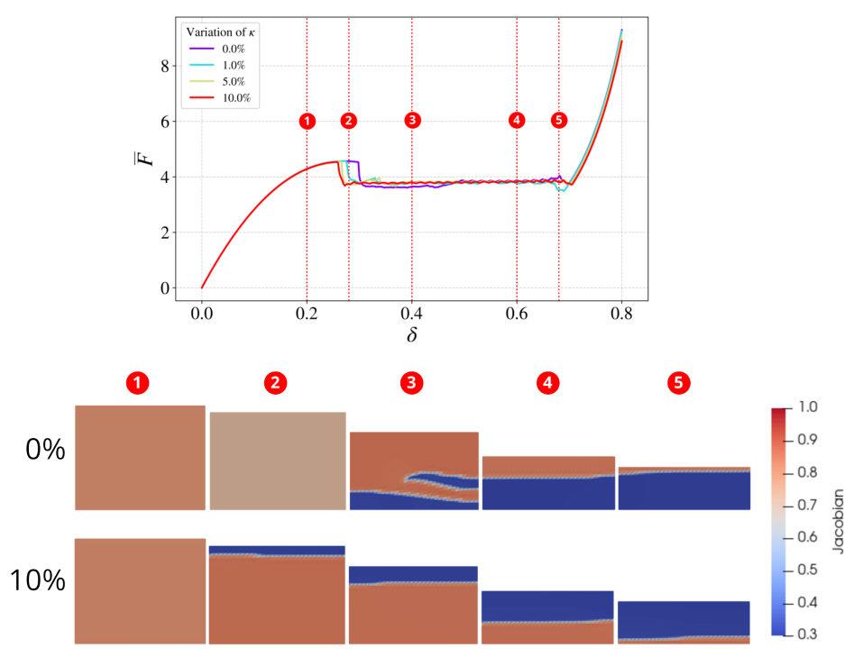
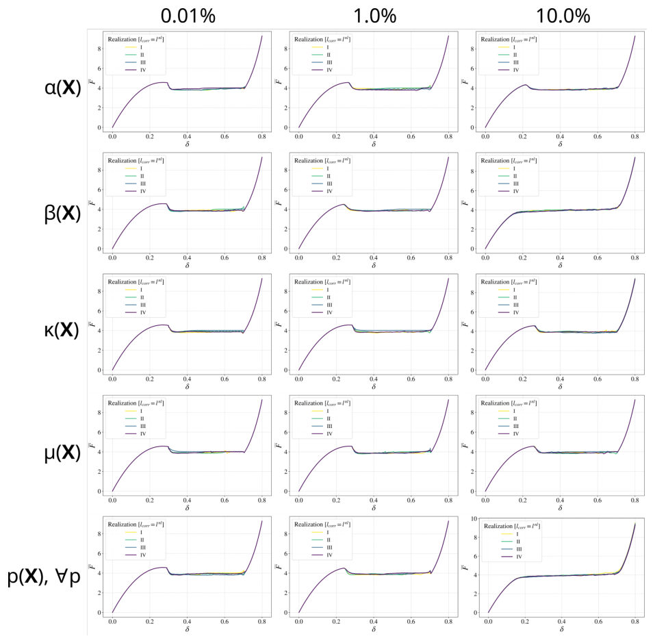
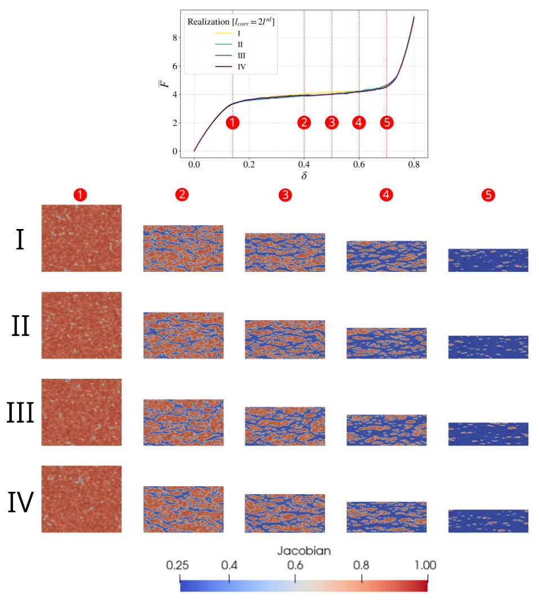
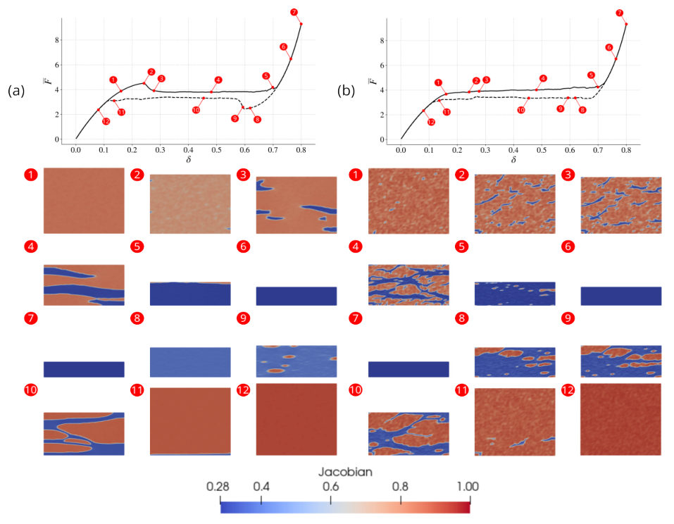
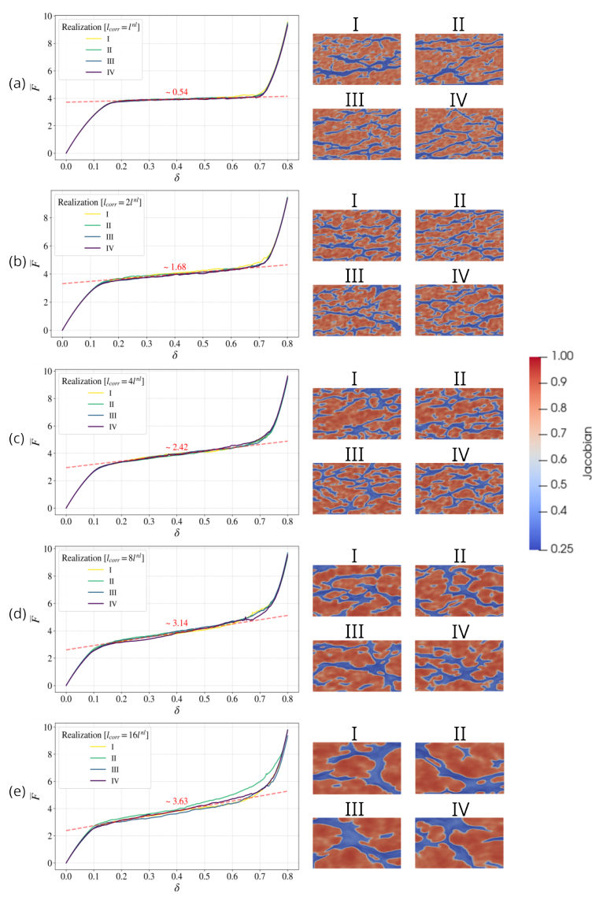
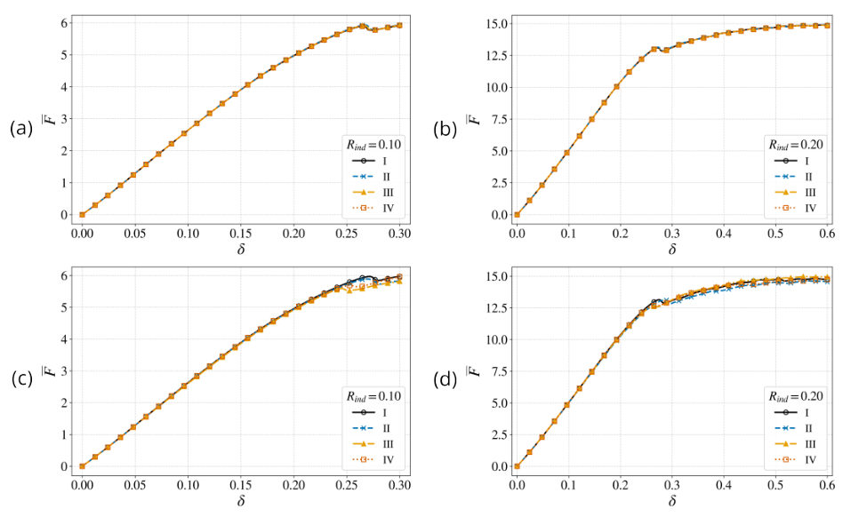
176 papers · 99 relevant · 6 highlighted
Every paper with at least one nonzero topic score, sorted by best-matching score. 🔥 marks scores ≥4/5. Click the title to jump to the full entry below; click [arXiv] to open the paper page. (secondary) marks papers from de-prioritized cond-mat archives.
Rydberg arrays 5/5 · 🔥 QC/QI experiment 4/5 · 🔥 analog quantum simulation 4/5 · 🔥 entanglement & information structure 4/5 · 🔥 non-equilibrium dynamics 4/5 · quantum measurements 3/5 · exotic spin models in light-matter 2/5 · measurement-induced transitions 2/5 · non-equilibrium universality 2/5 · scars & prethermalization 2/5scars & prethermalization 5/5 · 🔥 Rydberg arrays 4/5 · 🔥 non-equilibrium dynamics 4/5 · analog quantum simulation 3/5 · driven-dissipative phase transition 3/5 · entanglement & information structure 3/5 · exotic spin models in light-matter 3/5analog quantum simulation 4/5 · 🔥 driven-dissipative phase transition 4/5 · Tavis-Cummings & cavity-many-emitter 3/5 · correlated cavity matter 3/5 · exotic spin models in light-matter 3/5 · non-equilibrium dynamics 3/5 · non-equilibrium universality 3/5 · quantum optics experiment 3/5 · Keldysh / 2PI / non-Gaussian methods 2/5 · methods for driven-dissipative 2/5 · entanglement & information structure 1/5driven-dissipative phase transition 4/5 · 🔥 entanglement & information structure 4/5 · 🔥 measurement-induced transitions 4/5 · 🔥 non-equilibrium universality 4/5 · non-equilibrium dynamics 3/5 · methods for driven-dissipative 2/5 · quantum measurements 2/5(secondary) — 🔥 driven-dissipative phase transition 4/5 · 🔥 non-equilibrium dynamics 4/5 · 🔥 quantum optics experiment 4/5 · Keldysh / 2PI / non-Gaussian methods 3/5 · methods for driven-dissipative 3/5 · non-equilibrium universality 3/5quantum measurements 4/5 · correlated / nonlocal dissipation 3/5 · driven-dissipative phase transition 3/5 · entanglement & information structure 3/5 · methods for driven-dissipative 3/5 · measurement-induced transitions 2/5 · non-equilibrium dynamics 2/5driven-dissipative phase transition 4/5 · entanglement & information structure 3/5 · methods for driven-dissipative 3/5 · non-equilibrium dynamics 3/5 · Keldysh / 2PI / non-Gaussian methods 2/5 · correlated / nonlocal dissipation 2/5 · non-equilibrium universality 2/5QC/QI experiment 4/5 · 🔥 quantum optics experiment 4/5 · quantum measurements 3/5 · entanglement & information structure 2/5 · interference shaping light 2/5(secondary) — 🔥 QC/QI experiment 4/5 · 🔥 quantum optics experiment 4/5 · quantum measurements 3/5 · spintronics-quantum-optics interface 3/5driven-dissipative phase transition 4/5 · 🔥 non-equilibrium dynamics 4/5 · non-equilibrium universality 3/5 · quantum measurements 2/5non-equilibrium dynamics 4/5 · driven-dissipative phase transition 3/5 · entanglement & information structure 2/5 · non-equilibrium universality 2/5 · quantum measurements 2/5Rydberg arrays 4/5 · analog quantum simulation 3/5 · entanglement & information structure 3/5 · exotic spin models in light-matter 3/5QC/QI experiment 4/5 · 🔥 quantum optics experiment 4/5 · quantum measurements 3/5 · interference shaping light 2/5non-equilibrium dynamics 4/5 · driven-dissipative phase transition 3/5 · methods for driven-dissipative 3/5 · entanglement & information structure 2/5QC/QI experiment 4/5 · 🔥 quantum optics experiment 4/5 · quantum measurements 2/5 · spintronics-quantum-optics interface 2/5QC/QI experiment 4/5 · 🔥 spintronics-quantum-optics interface 4/5 · non-equilibrium dynamics 2/5 · quantum measurements 2/5QC/QI experiment 4/5 · 🔥 quantum optics experiment 4/5 · entanglement & information structure 2/5 · quantum measurements 2/5methods for driven-dissipative 4/5 · non-equilibrium dynamics 3/5 · driven-dissipative phase transition 2/5 · entanglement & information structure 2/5(secondary) — 🔥 spintronics-quantum-optics interface 4/5 · QC/QI experiment 3/5 · correlated / nonlocal dissipation 2/5 · quantum measurements 2/5QC/QI experiment 4/5 · non-equilibrium dynamics 2/5 · quantum measurements 2/5 · quantum optics experiment 2/5QC/QI experiment 4/5 · 🔥 quantum optics experiment 4/5 · interference shaping light 2/5QC/QI experiment 4/5 · spintronics-quantum-optics interface 3/5 · quantum optics experiment 2/5spintronics-quantum-optics interface 4/5 · interference shaping light 3/5 · methods for driven-dissipative 2/5spintronics-quantum-optics interface 4/5 · QC/QI experiment 3/5 · quantum measurements 2/5quantum measurements 4/5 · entanglement & information structure 2/5 · methods for driven-dissipative 2/5QC/QI experiment 4/5 · entanglement & information structure 2/5 · non-equilibrium dynamics 2/5entanglement & information structure 4/5 · 🔥 non-equilibrium dynamics 4/5QC/QI experiment 4/5 · 🔥 quantum optics experiment 4/5non-equilibrium dynamics 4/5 · analog quantum simulation 2/5 · exotic spin models in light-matter 2/5analog quantum simulation 4/5 · exotic spin models in light-matter 3/5QC/QI experiment 4/5 · quantum measurements 3/5quantum optics experiment 4/5 · QC/QI experiment 3/5QC/QI experiment 4/5 · quantum optics experiment 2/5quantum measurements 4/5 · entanglement & information structure 2/5methods for driven-dissipative 4/5 · non-equilibrium dynamics 2/5methods for driven-dissipative 4/5QC/QI experiment 4/5(secondary) — 🔥 spintronics-quantum-optics interface 4/5QC/QI experiment 4/5QC/QI experiment 4/5entanglement & information structure 3/5 · non-equilibrium dynamics 3/5 · Keldysh / 2PI / non-Gaussian methods 2/5 · correlated / nonlocal dissipation 2/5 · methods for driven-dissipative 2/5methods for driven-dissipative 3/5 · correlated / nonlocal dissipation 2/5 · driven-dissipative phase transition 2/5 · entanglement & information structure 2/5 · non-equilibrium dynamics 2/5methods for driven-dissipative 3/5 · Tavis-Cummings & cavity-many-emitter 2/5 · driven-dissipative phase transition 2/5 · non-equilibrium dynamics 2/5 · non-equilibrium universality 2/5methods for driven-dissipative 3/5 · non-equilibrium dynamics 3/5 · entanglement & information structure 2/5 · quantum measurements 2/5methods for driven-dissipative 3/5 · non-equilibrium dynamics 3/5 · correlated / nonlocal dissipation 2/5 · entanglement & information structure 2/5entanglement & information structure 3/5 · correlated / nonlocal dissipation 2/5 · non-equilibrium dynamics 2/5 · quantum measurements 2/5interference shaping light 3/5 · quantum optics experiment 3/5 · QC/QI experiment 2/5non-equilibrium dynamics 3/5 · non-equilibrium universality 3/5methods for driven-dissipative 3/5 · quantum measurements 3/5(secondary) — spintronics-quantum-optics interface 3/5 · QC/QI experiment 2/5QC/QI experiment 3/5 · methods for driven-dissipative 2/5(secondary) — non-equilibrium dynamics 3/5 · spintronics-quantum-optics interface 2/5quantum measurements 3/5 · Keldysh / 2PI / non-Gaussian methods 2/5entanglement & information structure 3/5 · Frenkel-Kontorova 2/5(secondary) — entanglement & information structure 3/5 · Keldysh / 2PI / non-Gaussian methods 2/5quantum measurements 3/5 · entanglement & information structure 2/5non-equilibrium dynamics 3/5 · non-equilibrium universality 2/5Rydberg arrays 3/5quantum measurements 3/5entanglement & information structure 3/5correlated / nonlocal dissipation 2/5 · quantum measurements 2/5 · spintronics-quantum-optics interface 2/5QC/QI experiment 2/5 · quantum optics experiment 2/5 · spintronics-quantum-optics interface 1/5analog quantum simulation 2/5 · interference shaping light 2/5analog quantum simulation 2/5 · non-equilibrium dynamics 2/5(secondary) — quantum optics experiment 2/5 · spintronics-quantum-optics interface 2/5(secondary) — driven-dissipative phase transition 2/5 · non-equilibrium dynamics 2/5(secondary) — Keldysh / 2PI / non-Gaussian methods 2/5 · non-equilibrium dynamics 2/5non-equilibrium dynamics 2/5 · non-equilibrium universality 2/5QC/QI experiment 2/5 · Rydberg arrays 1/5 · quantum measurements 1/5correlated / nonlocal dissipation 2/5 · entanglement & information structure 2/5QC/QI experiment 2/5 · quantum optics experiment 2/5non-equilibrium dynamics 2/5 · non-equilibrium universality 2/5analog quantum simulation 2/5 · methods for driven-dissipative 2/5quantum measurements 2/5methods for driven-dissipative 2/5QC/QI experiment 2/5entanglement & information structure 2/5(secondary) — non-equilibrium dynamics 2/5Keldysh / 2PI / non-Gaussian methods 2/5Keldysh / 2PI / non-Gaussian methods 2/5entanglement & information structure 2/5entanglement & information structure 2/5entanglement & information structure 2/5(secondary) — non-equilibrium dynamics 2/5methods for driven-dissipative 2/5QC/QI experiment 2/5entanglement & information structure 2/5spintronics-quantum-optics interface 2/5Keldysh / 2PI / non-Gaussian methods 2/5methods for driven-dissipative 2/5Keldysh / 2PI / non-Gaussian methods 2/5methods for driven-dissipative 2/5entanglement & information structure 2/5entanglement & information structure 2/5spintronics-quantum-optics interface 2/5(secondary) — non-equilibrium dynamics 2/5analog quantum simulation 2/5Kondo & dissipative impurity 1/5quantum measurements 1/5Papers by authors on your watch list. Click the title to jump to the full entry below; click [arXiv] to open the paper page.
Papers from quant-ph and your primary cond-mat archives (quant-gas, stat-mech, str-el, dis-nn). Highlighted papers (⭐) come first, then everything else sorted by topic-relevance score, highest first.
Authors: Claire Griesbach, Dennis M. Kochmann
Type: both · Category: other · PDF: https://arxiv.org/pdf/2604.25869v1
Analysis basis: full PDF text, analyzed in chunks
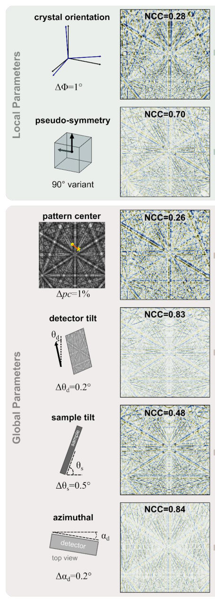
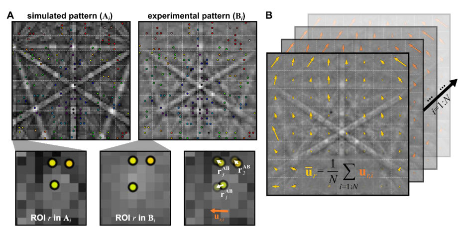
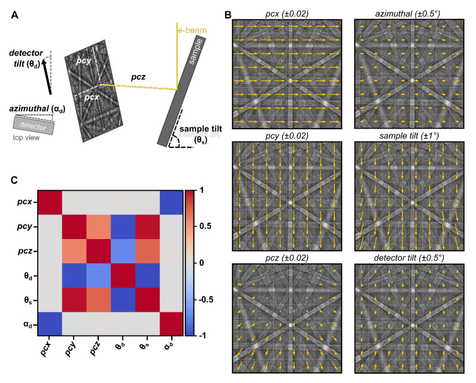
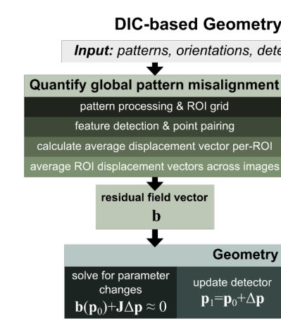
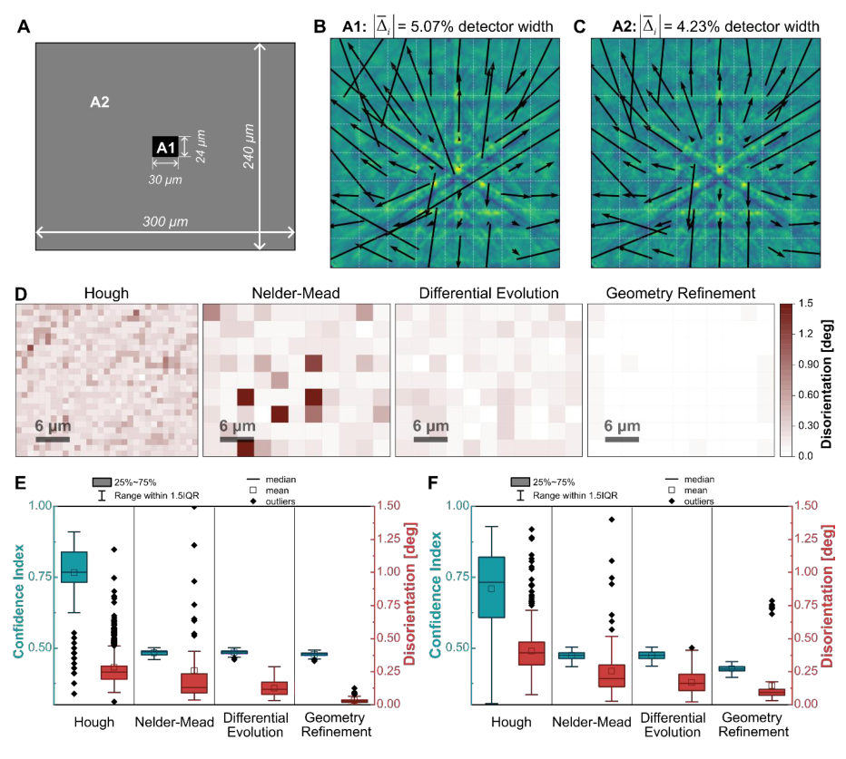
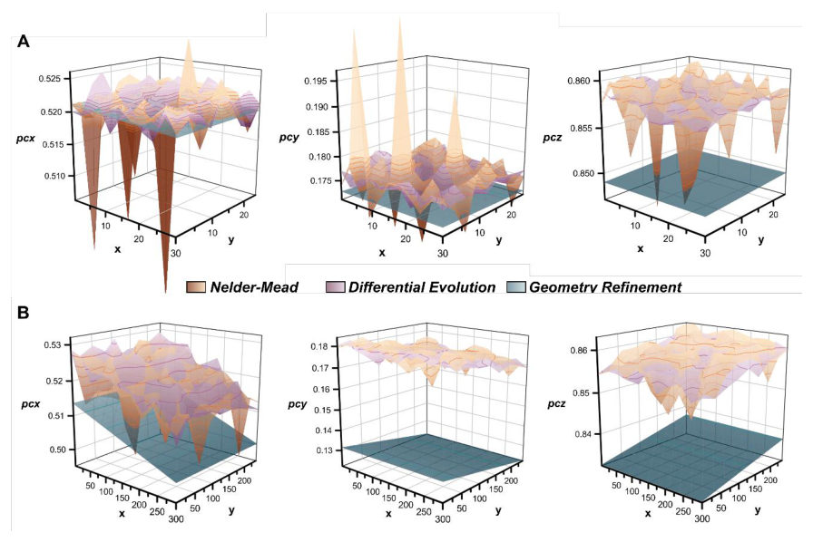
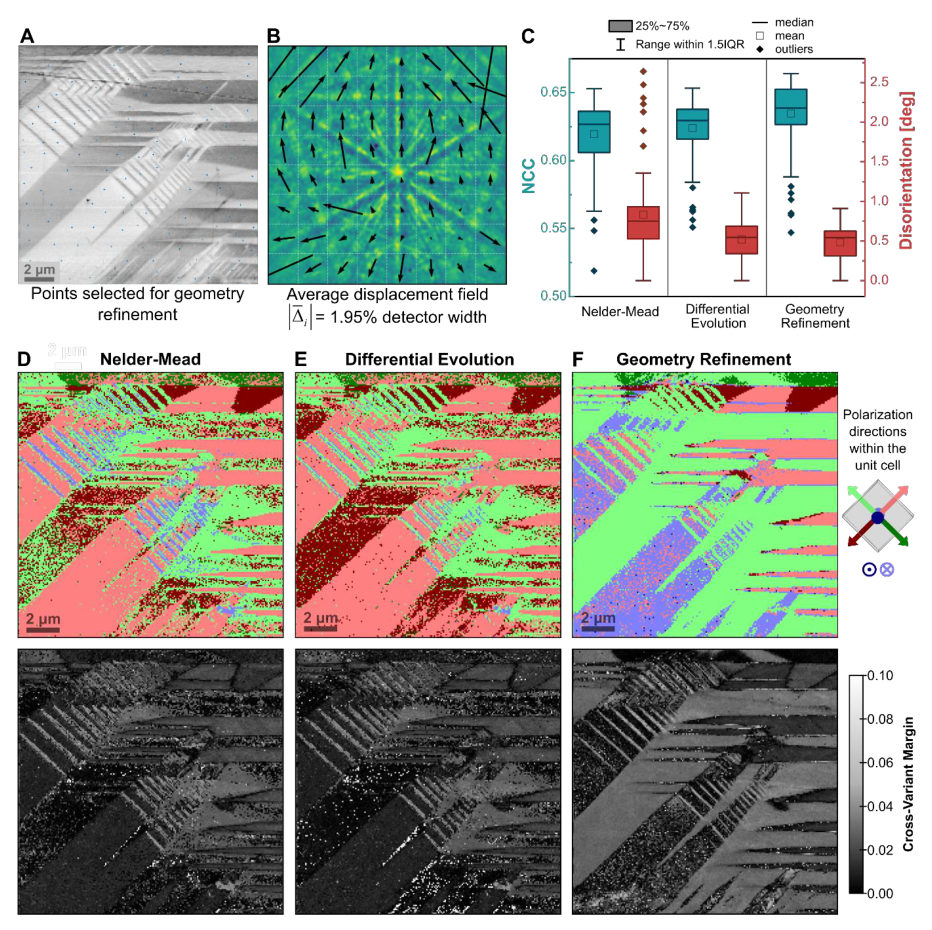
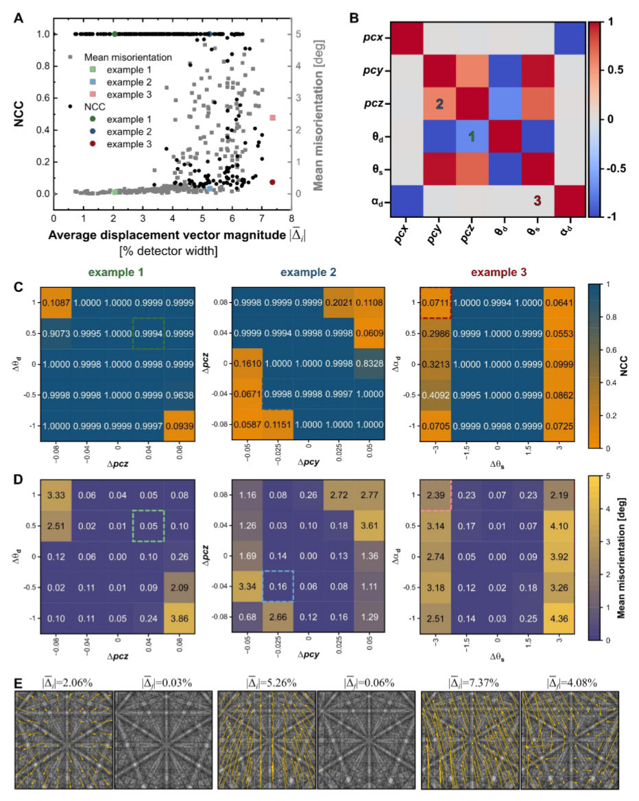
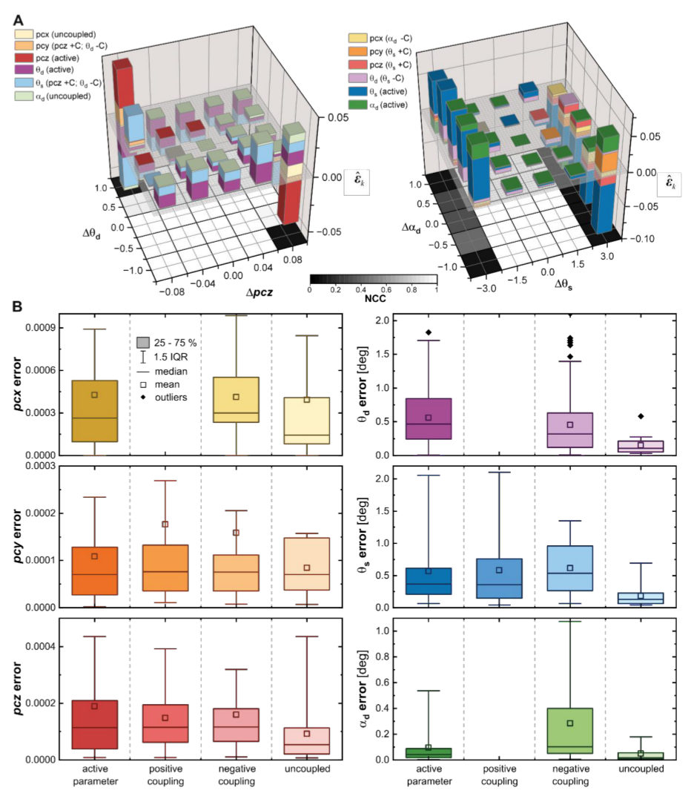
Main problem. Inaccurate EBSD orientation indexing caused by the coupling between global sample-detector geometry errors and local crystallographic orientation changes.
Main result. A global DIC-based refinement method that achieves high orientation accuracy (0.03 degree disorientation in Si) and effectively discriminates pseudosymmetric variants in BTO, performing up to 50x faster than traditional optimization.
Method. A global Digital Image Correlation (DIC) algorithm that uses a Jacobian sensitivity matrix and a weighted least-squares approach to decouple map-wide pattern shifts from local orientation changes.
Summary. This paper presents a new method for refining the sample-detector geometry in EBSD microscopy using Digital Image Correlation. By analyzing spatially coherent pattern shifts across an entire map, the method decouples global geometric errors from local crystal orientation changes. This approach is significantly faster than traditional optimization and provides much higher accuracy, particularly for distinguishing between similar crystal variants in complex materials like barium titanate.
Model / system. Electron Backscatter Diffraction (EBSD) microscopy using Kikuchi patterns, with experimental demonstrations on single-crystal silicon and barium titanate (BTO).
Key observables. Kikuchi patterns, Normalized Cross-Correlation (NCC), disorientation angles, Confidence Index (CI), and displacement fields.
Important parameters / regimes. Six geometry parameters: pattern center (pc_x, pc_y, pc_z), detector tilt, detector azimuthal angle, and sample tilt; refinement reliability is valid for displacements < 4% of detector width.
Assumptions / limitations. The refinement algorithm relies on a linear approximation of geometry parameter sensitivities, which may fail for large geometric perturbations.
Figures summary. Figure 1 shows parameter coupling and pattern shifts; Figure 5 compares refinement methods on Si using disorientation and CI maps; Figure 6 shows spatial stability of pattern centers; Figure 7 demonstrates application to BTO domain identification; Figure 8/9 show error analysis, coupling matrices, and parameter error statistics.
Paper structure. The paper introduces the problem of geometry-orientation coupling, presents the DIC-based refinement algorithm, validates it using Si single crystals for accuracy and speed, demonstrates its utility in identifying pseudosymmetric variants in BTO, and concludes with a sensitivity/error analysis of the linear approximation.
Electron backscatter diffraction is a powerful tool for mapping crystallographic microstructures. However, the primary crux to improving orientation accuracy and applying the technique to challenging materials lies in the correct calibration of the sample-detector geometry. Many approaches have aimed at overcoming this barrier through various pattern center calibration strategies, but the pattern center only defines part of the sample-detector geometry. Here, we present a DIC-based geometry refinement method that obtains a single map-consistent sample-detector geometry, refining both the pattern center and sample/detector angles. We effectively decouple the local orientation changes from the global geometry effects on the Kikuchi patterns by calculating the consistent map-wide simulated-to-experimental pattern shifts associated with global geometry parameter errors. Using single-crystal silicon and barium titanate (a material possessing six pseudosymmetric variants) as model materials, we demonstrate improved map-wide orientation consistency and more robust discrimination of pseudosymmetric variants than the Nelder-Mead and Differential Evolution optimization strategies.
Authors: Yuto Kinoshita, Masayuki Toyoda, Yoshiaki Kobayashi, Masayuki Itoh, Masashi Tokunaga
Type: experiment · Category: strongly correlated electrons · PDF: https://arxiv.org/pdf/2604.25274v1
Analysis basis: full PDF text, analyzed in chunks
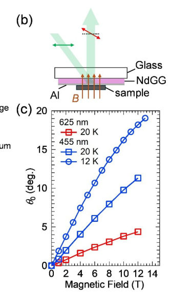
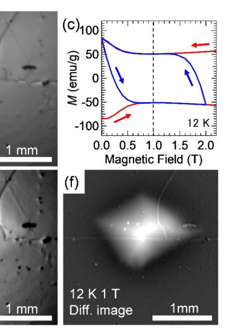
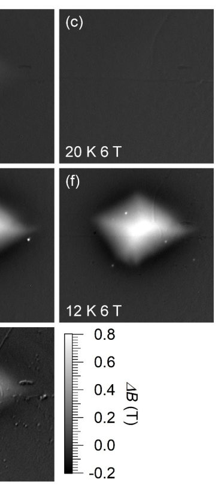
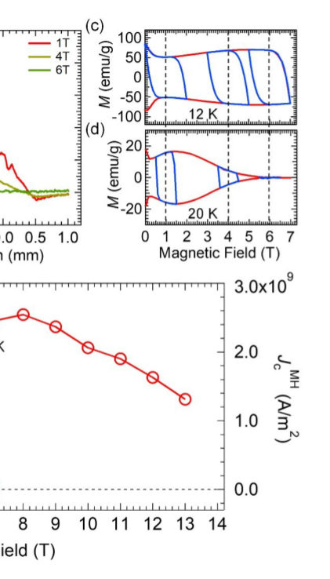
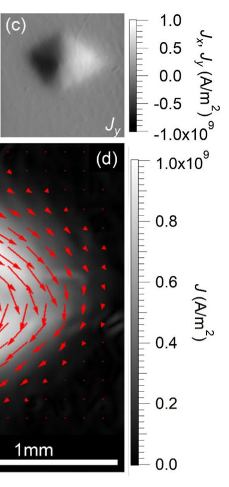
Main problem. Conventional magneto-optical imaging (MOI) is limited to low magnetic fields because standard indicators saturate, making it difficult to spatially resolve the critical current density (Jc) in superconductors under high magnetic fields (> 10 T).
Main result. The researchers developed a high-field MOI technique using a paramagnetic Nd-garnet sensor that enables imaging up to 13 T, successfully mapping the magnetic flux and vector current density in iron-based superconductors.
Method. The technique uses a paramagnetic Nd-garnet indicator in a polarizing microscope system to detect Faraday rotation induced by magnetic fields, followed by quantitative reconstruction of Jc using the Bean model and Fourier transformation.
Summary. This paper presents a new magneto-optical imaging technique that overcomes the saturation limits of conventional indicators by using a paramagnetic Nd-garnet sensor. This allows for the spatial visualization of magnetic flux and current density in superconductors at much higher magnetic fields (up to 13 T) than previously possible. The researchers demonstrated this by mapping the critical current density in iron-based superconductors, providing a powerful tool to study inhomogeneous current transport in high-field regimes.
Model / system. The experimental platform consists of a polarizing microscope integrated with a superconducting magnet (up to 13 T) used to image bulk single crystals of the iron-based superconductor Ba(Fe1-xCox)2As2.
Key observables. Faraday rotation angle, magnetic flux density distribution (Bz), critical current density (Jc), and vector current density components (Jx, Jy).
Important parameters / regimes. Magnetic fields up to 13 T, temperatures of 12 K and 20 K, and wavelengths of 455 nm and 625 nm.
Assumptions / limitations. Assumed a linear relationship between intensity and magnetic field within a +/- 1 T range and that Jc is locally field-independent.
Figures summary. Fig 1: Schematic of MOI setup and Faraday rotation dependence on field/wavelength; Fig 2: Optical images of flux trapping and flux penetration; Fig 3: Differential flux images at various high fields; Fig 4: Line profiles and comparison of Jc from MOI vs magnetization; Fig 5: Vector maps of current density components.
Paper structure. Introduction of the high-field imaging problem, description of the Nd-garnet indicator and optical setup, calibration of the Faraday rotation, demonstration of flux imaging in Ba(Fe,Co)2As2, quantitative extraction of Jc, and vector mapping of current distributions.
Spatially resolved characterization of the critical current density Jc in superconductors under high magnetic fields is crucial for both fundamental understanding and practical applications. However, conventional techniques primarily provide bulk-averaged values, making it difficult to resolve local variations of Jc, especially in high magnetic fields. In this work, we develop a magneto-optical imaging (MOI) technique that enables visualization of superconducting critical states in steady magnetic fields up to 13 T. This is achieved by employing a paramagnetic Nd-garnet indicator combined with a polarizing microscope system. Using this method, we directly image the magnetic flux distribution in a bulk single crystal of an iron-based superconductor Ba(Fe1-xCox)2As2 (x = 0.075) at 12 K and 20 K across the entire sample area (approximately 1 mm). From the measured magnetic field distributions, we quantitatively reconstruct the spatial distribution of the critical current density. The extracted field dependence of Jc is in good agreement with that obtained from conventional magnetization measurements. Furthermore, we demonstrate vector mapping of current flow within the sample by converting the magnetic field distribution into local current-density distributions. Our results establish high-field MOI as a powerful approach for spatially resolved evaluation of superconducting critical states and provide a new pathway for investigating inhomogeneous current transport in superconductors under high magnetic fields.
Authors: Sarvesh Joshi, Jingye Tan, Craig M. Hamel, Stavros Gaitanaros, Nikolaos Bouklas
Type: theory · Category: disordered systems and neural networks · PDF: https://arxiv.org/pdf/2604.25075v1
Analysis basis: full PDF text, analyzed in chunks








Main problem. Understanding how stochastic material heterogeneity, introduced via Gaussian random fields, influences the macroscopic mechanical response, stability, and localization patterns in architected metamaterials.
Main result. The study demonstrates that heterogeneity fundamentally alters phase nucleation, localization morphology, and macroscopic response, such as changing the plateau slope and even eliminating the initial elastic regime.
Method. Finite element simulations using a gradient-enhanced, nonlocal continuum formulation and Gaussian Random Fields (GRF) implemented via a stochastic elliptic PDE.
Summary. This paper develops a mathematical framework to study how random material fluctuations affect the stability and deformation of engineered metamaterials. By using Gaussian Random Fields, the authors show that the spatial scale and intensity of disorder can change how these materials collapse and densify. The work provides a unified way to link manufacturing imperfections to macroscopic mechanical failure. This is crucial for designing more robust and predictable architected structures.
Model / system. Architected metamaterials (e.g., foams and lattices) modeled using a nonlinear, thermodynamically consistent, gradient-enhanced continuum framework with a non-convex Helmholtz free energy density.
Key observables. Phase nucleation sites, localization morphology, macroscopic force-displacement response, Jacobian field (densification), and effective bulk modulus.
Important parameters / regimes. Coefficient of variation (amplitude of fluctuations), correlation length (spatial scale of fluctuations), nonlocal lengthscale, and constitutive parameters (alpha, beta, kappa, mu).
Assumptions / limitations. The material is isotropic, the process is isothermal and quasi-static, and the focus is limited to purely elastic architected metamaterials.
Figures summary. Visualizations of stochastic field realizations at different variance and correlation levels; plots of effective bulk modulus versus constitutive parameters; and analytical plots of the Helmholtz free energy density.
Paper structure. The paper identifies the problem of manufacturing-induced heterogeneity, introduces a nonlinear continuum theory with stochastic parameters via GRFs, details the numerical implementation in FEniCS, and presents parametric studies on how amplitude and correlation length affect mechanical stability and localization.
Why it may be interesting. While focused on mechanics, the use of Gaussian Random Fields to study how spatial disorder drives localization and phase-transition-like phenomena (densification) shares deep mathematical parallels with studying disorder-induced localization in many-body systems.
Architected metamaterials like foams and lattices exhibit complex responses governed by microstructural instabilities, localization, and phase-transition-like phenomena. Their behavior is further affected by heterogeneities inherent in their microstructure often caused through manufacturing processes. In this study we extend a gradient-enhanced, nonlocal continuum formulation to incorporate stochastic material heterogeneity through Gaussian random fields imposed on selected constitutive parameters. The framework enables independent control of both the amplitude and spatial correlation of material fluctuations while preserving thermodynamic consistency and regularization of localization. It also introduces a characteristic lengthscale ratio between the nonlocal and correlation lengthscales, that enables modeling at the limit of random or spatially correlated microstructures. Finite element simulations of confined compression and indentation show that heterogeneity fundamentally alters phase nucleation, localization morphology, and macroscopic response. Overall, the proposed framework provides a unified approach for linking stochastic material variability to instability-driven mechanics in architected metamaterials, enabling improved understanding of imperfection sensitivity, stability and design. It showcases how heterogeneity alone can influence characteristic features of the response, such as stability, slope of the plateau region, and elimination of the initial elastic regime.
Authors: S. A. Andreeva, A. A. Gavrilov, K. R. Dzhikirba, A. S. Astrakhantseva, A. V. Shchepetilnikov, O. V. Orlov, V. V. Solovyev, I. V. Kukushkin
Type: experiment · Category: other · PDF: https://arxiv.org/pdf/2604.25736v1
Analysis basis: full PDF text, analyzed in chunks
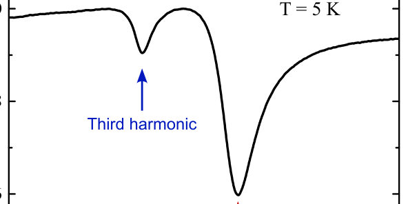
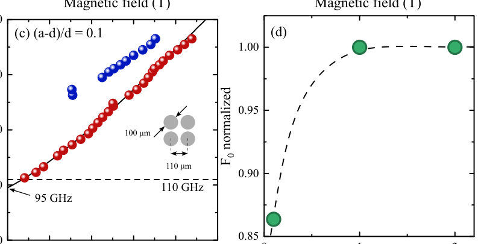
Main problem. Investigating how inter-disk coupling and lateral screening affect the magnetoplasma dispersion and collective modes in a square lattice of 2D electron system disks.
Main result. The system behaves as a collection of isolated disks at large separations, but as the lattice period decreases, the plasma frequency shifts to lower values (from 110 GHz to 95 GHz) due to increased coupling.
Method. Magneto-optical terahertz (THz) transmission spectroscopy using a microwave generator and frequency extenders to track resonance evolution in a perpendicular magnetic field.
Summary. This paper studies how the interaction between closely spaced 2D electron disks affects their collective plasma oscillations. By using THz spectroscopy on a GaAs-based disk array, the researchers show that while large separations allow for an independent-disk description, bringing the disks closer together causes a significant shift in the plasma frequency. This demonstrates the transition from isolated excitations to a coupled regime where inter-disk electromagnetic fields modify the dispersion.
Model / system. A square lattice of 2D electron system (2DES) disks etched from an AlGaAs/GaAs/AlGaAs quantum well, with varying lattice periods (a = 300, 200, and 110 micrometers) and disk diameter (d = 100 micrometers).
Key observables. Magnetoplasma resonance frequencies (1st and 3rd harmonics), plasma frequency (F0), and transmission spectra.
Important parameters / regimes. Lattice constant (a), disk diameter (d), magnetic field (B), cyclotron frequency, and the proximity factor (a-d)/d.
Assumptions / limitations. The use of the dipole approximation (explaining the absence of even-numbered modes) and comparison against a non-retarding plasmon dispersion model.
Figures summary. Figures show magnetodispersion for different lattice periods including harmonics and edge modes, and the dependence of the plasma frequency on the disk proximity factor.
Paper structure. The paper introduces the experimental platform, describes the THz spectroscopy setup, presents the evolution of magnetoplasma modes with decreasing lattice spacing, compares results to theoretical models, and discusses the effects of coupling on mode resolution.
We investigate the effect of inter-disk coupling on the magnetoplasmon dispersion in a square lattice of two-dimensional electron system (2DES) disks etched from a GaAs quantum well. Using magneto-optical terahertz (THz) spectroscopy, we track the evolution of the collective modes as disk lattice period is systematically reduced, thereby increasing the coupling strength. At large distances, the system exhibits magnetoplasma modes corresponding to individual excitations in disks. As the inter-disk distance decreases, we observe a modification to magnetoplasma dispersion.
Authors: Tomomi Tateishi, Akihito Kato, Alexander S. Ovchinnikov, Jun-ichiro Kishine
Type: theory · Category: other · PDF: https://arxiv.org/pdf/2604.25328v1
Analysis basis: full PDF text, analyzed in chunks
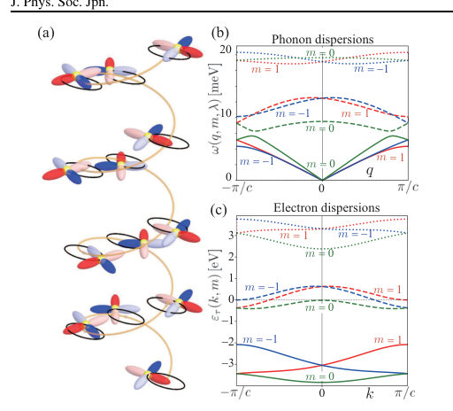
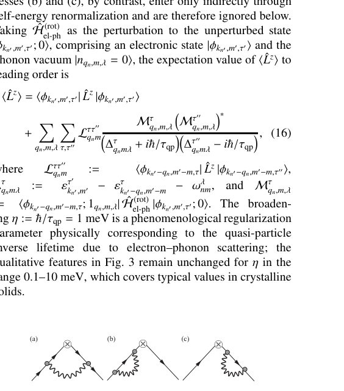
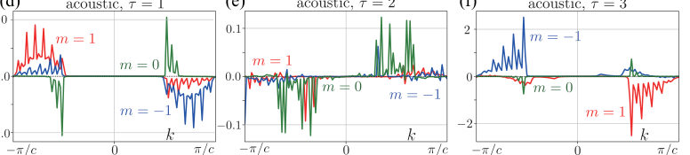
Main problem. The paper investigates the microscopic mechanism of Chirality-Induced Orbital Selectivity (CIOS) in helical crystals, specifically how chiral phonons transfer angular momentum to electronic orbital degrees of freedom.
Main result. The authors derive a rotational electron-phonon interaction that drives orbital transfer (m_l to m_l - m_s) following crystal angular momentum conservation, finding that the orbital response is enhanced at intermediate wave vectors and suppressed near the Gamma point and BZ boundary.
Method. A symmetry-based microscopic theory using the irreducible representations of the helical line group L31, employing perturbation theory and a modified tight-binding approximation.
Summary. This paper provides a microscopic theoretical framework for understanding how chiral phonons in helical crystals induce orbital selectivity in electrons. By analyzing the rotational electron-phonon interaction, the authors show that angular momentum is transferred from the lattice to the electronic p-orbitals in a way that conserves crystal angular momentum. This mechanism provides a fundamental link to the phenomenon of Chirality-Induced Spin Selectivity (CISS). The study also predicts that this effect is highly dependent on the crystal momentum, being most prominent at intermediate wave vectors.
Model / system. A 1D effective model of a 3D helical crystal with L31 symmetry (e.g., Tellurium) featuring p-orbital electrons and chiral phonon modes.
Key observables. The expectation value of the z-component of orbital angular momentum
Important parameters / regimes. Electronic orbital index (m_l), phonon rotational mode eigenvalue (m_s), helical rotation angle (alpha), and wave vector (k).
Assumptions / limitations. Weak-coupling regime; use of a discrete lattice definition for local rotation; expansion of the overlap integral to first order in nuclear displacement.
Figures summary. Fig 1 shows schematic rotational phonon modes, phonon dispersions by CAM, and electron dispersions. Fig 2 provides a diagrammatic representation of the leading-order contributions to orbital angular momentum. Fig 3 shows the unperturbed orbital angular momentum response.
Paper structure. The paper introduces the problem of CIOS, defines the helical crystal model and Hamiltonian, derives the analytical form of the rotational electron-phonon vertex, calculates the orbital angular momentum response using perturbation theory, and discusses the connection to CISS and k-dependent suppression/enhancement.
We present a microscopic theory of chirality-induced orbital selectivity (CIOS) in helical crystals, in which truly chiral phonons selectively transfer angular momentum to electronic orbital degrees of freedom. For a threefold helical crystal with line-group symmetry $L3_1$, we show that phonon-induced local rotations generate a rotational electron--phonon interaction proportional to $\hat{L}^{\pm}$, which drives the orbital transfer $m_{\ell}\to m_{\ell}-m_{s}$ in accordance with crystal angular momentum (CAM) conservation, where $m_{s}=\pm 1$ denotes the eigenvalue of the phonon rotational mode. Evaluating $\langle\hat{L}^{z}\rangle$ to leading order in perturbation theory, we find that the orbital response is suppressed near the $Γ$ point and the BZ boundary, and enhanced at intermediate wave vectors -- a feature intimately tied to the degeneracy structure of the phonon bands.
Authors: Gustavo Estay, Daisuke Noto, Hugo N. Ulloa
Type: theory · Category: other · PDF: https://arxiv.org/pdf/2604.24979v1
Analysis basis: full PDF text, analyzed in chunks
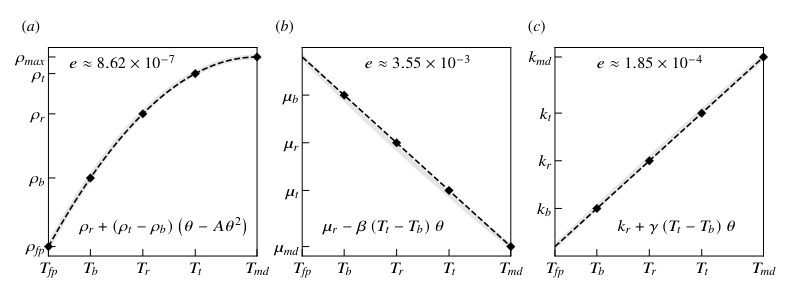
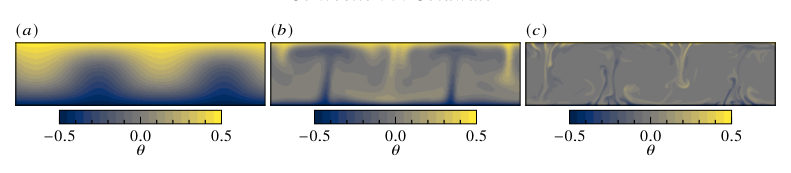
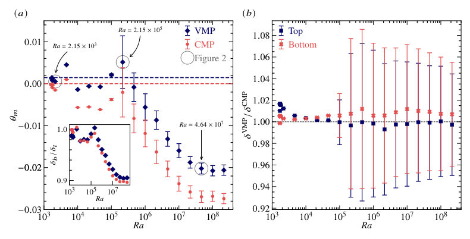
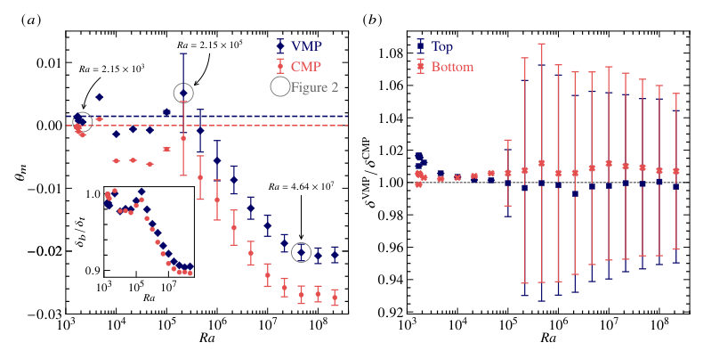
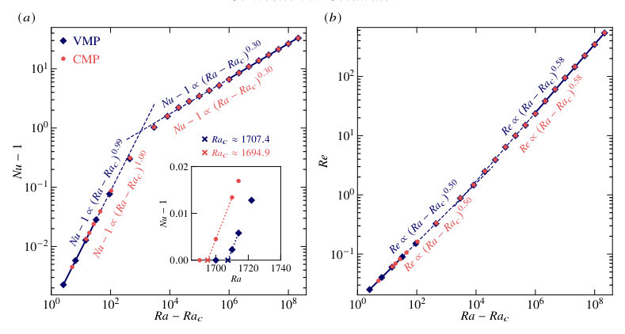
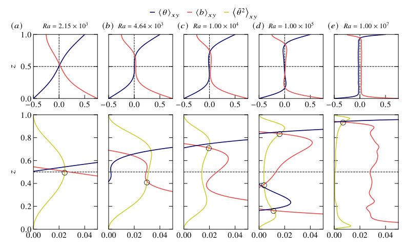
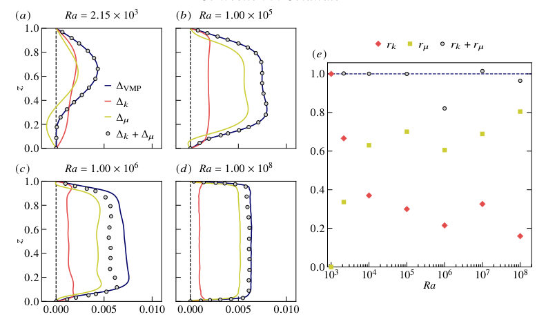
Main problem. Investigating how non-Oberbeck-Boussinesq effects, specifically nonlinear density-temperature relations and temperature-dependent viscosity and thermal conductivity, modify Rayleigh-Bénard convection in coldwater systems.
Main result. The study finds that these effects break the vertical symmetry of the temperature profile, shift the critical Rayleigh number, and that while heat transfer follows classical scaling after accounting for the shift, the Reynolds number scaling matches Grossmann-Lohse theory at an intermediate Prandtl number.
Method. Two-dimensional Direct Numerical Simulations (DNS) using the Dedalus spectral solver.
Summary. This paper examines how the unique physical properties of water near freezing—such as its non-linear density relation and temperature-dependent viscosity—affect convective heat transfer. Using direct numerical simulations, the authors show that these 'non-Oberbeck-Boussinesq' effects break the vertical symmetry of temperature profiles and shift the onset of convection. The results demonstrate that despite these complexities, the heat transfer and flow velocity still follow established scaling theories when the shift in the critical Rayleigh number is properly accounted for. This work is significant for understanding heat distribution and mixing in ice-covered aquatic environments.
Model / system. A Rayleigh-Bénard convection framework representing ice-bounded aquatic systems, utilizing a quadratic equation of state for density and linear models for temperature-dependent viscosity and thermal conductivity.
Key observables. Nusselt number (Nu), Reynolds number (Re), mean temperature (theta_m), boundary layer thicknesses, and critical Rayleigh number (Ra_c).
Important parameters / regimes. Rayleigh number (Ra), Prandtl number (Pr), and dimensionless parameters A (EOS nonlinearity), B (viscosity contrast), and C (conductivity contrast).
Assumptions / limitations. The density dependence is modeled via a quadratic equation of state, and viscosity and thermal conductivity variations are modeled linearly.
Figures summary. Figure 1 displays the temperature dependence of water properties, specifically the quadratic model for density and linear models for dynamic viscosity and thermal conductivity.
Paper structure. The paper introduces the problem of non-Oberbeck-Boussinesq effects in coldwater, describes the numerical model and governing equations, presents results regarding symmetry breaking and temperature shifts, analyzes scaling laws for heat and momentum transport, and concludes with implications for cryospheric dynamics.
Water exhibits an anomalous nonlinear temperature-density ($ρ$-$T$) relation as it approaches freezing, along with an increase in viscosity, and a decrease in thermal conductivity. These departures from the standard Oberbeck--Boussinesq approximation, which assumes constant material properties and a linear $ρ$-$T$ relation, can modify convection in ice-bounded aquatic systems, yet their effects remain unexplored. Here, we examine these effects via the canonical Rayleigh--Bénard convection framework using direct numerical simulations. We show that non-Oberbeck--Boussinesq effects lower the mean fluid temperature relative to the standard case and break the classical symmetry of the mean temperature profile. The magnitude of this symmetry breaking depends on both the Rayleigh number $Ra$ and the temperature-dependent material properties retained in the governing equations. We further identify a small but measurable shift in the critical Rayleigh number, $Ra_c$. After accounting for this shift, the nondimensional heat transfer rate, $Nu$, follows the classical scaling with supercriticality, while $Re$ remains consistent with the Grossmann--Lohse unifying theory, $Re\propto (Ra-Ra_c)^{1/2}$ for low-$Ra$ convection (regime $\mathrm{I}_u$) and $Re\propto (Ra-Ra_c)^{4/7}$ at high-$Ra$ (regime $\mathrm{III}_u$). Unlike the classical expectation that the latter scaling arises at high Prandtl number, here it is obtained at an intermediate Prandtl number, $Pr\sim 10$. Our results establish how near-freezing material anomalies affect both local and global properties of convection, with implications for heat distribution and mixing in cryospheric liquid waters.
Authors: Md Ashraful Alam, Md Abdul Hadi Shah, F. Parvin, S. H. Naqib
Type: theory · Category: other · PDF: https://arxiv.org/pdf/2604.25626v1
Analysis basis: full PDF text, analyzed in chunks
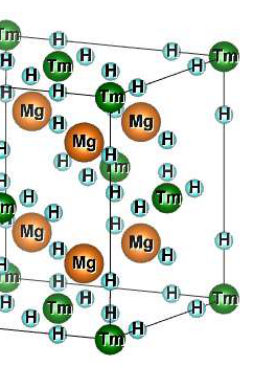
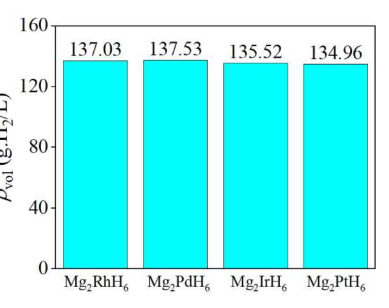
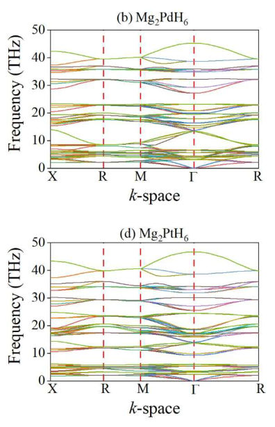
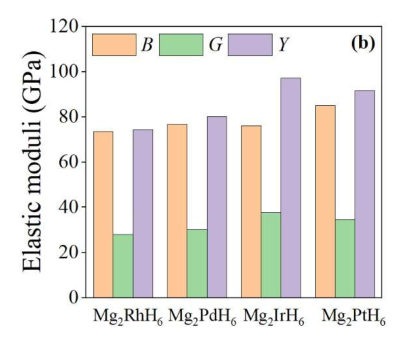
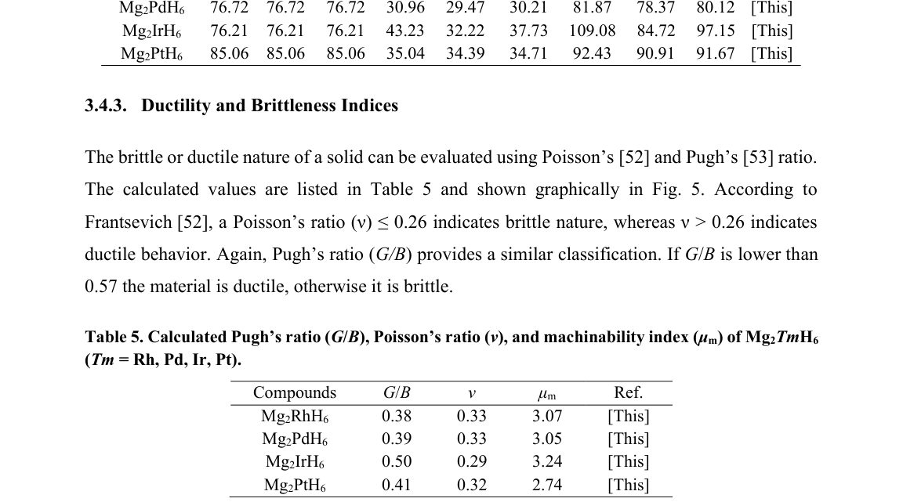
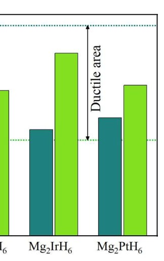
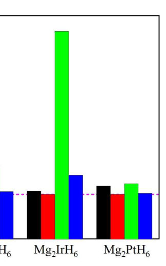
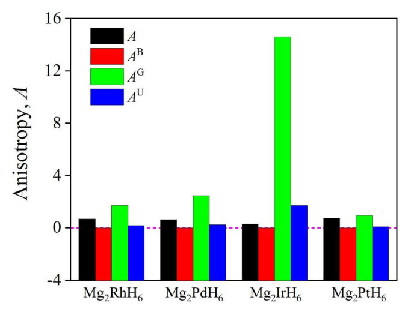
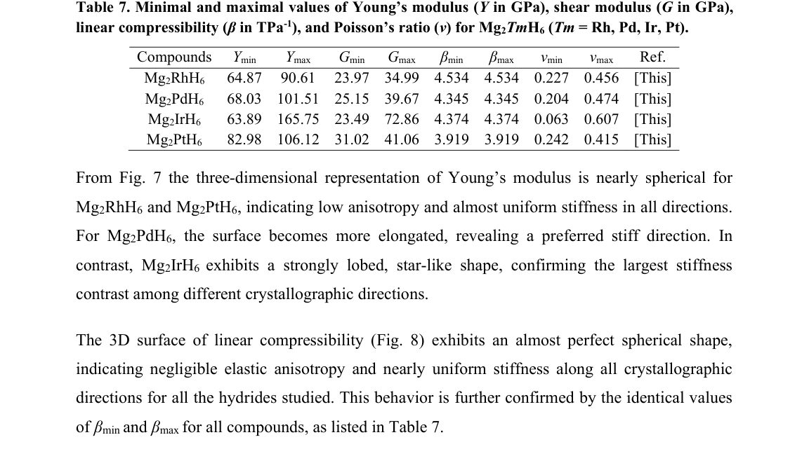
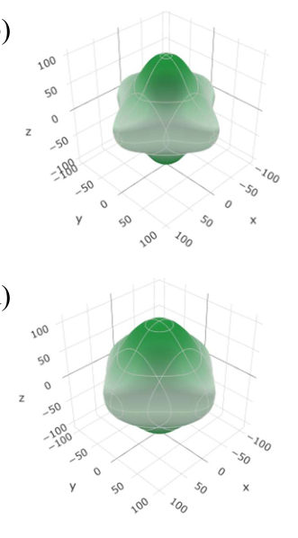
Main problem. The study investigates the structural, electronic, mechanical, thermodynamic, and optical properties of a specific family of transition metal hydrides (Mg2TmH6, where Tm = Rh, Pd, Ir, Pt) to evaluate their potential for hydrogen storage, superconductivity, and optoelectronic applications.
Main result. The hydrides are found to be thermodynamically, mechanically, and dynamically stable, with predicted superconducting transition temperatures between 25-44 K and significant potential for hydrogen storage and UV optoelectronics.
Method. First-principles calculations using Density Functional Theory (DFT) within the CASTEP code, employing the Generalized Gradient Approximation (GGA) and the plane-wave pseudopotential method.
Summary. This paper uses first-principles DFT calculations to comprehensively characterize a family of transition metal hydrides (Mg2RhH6, Mg2PdH6, Mg2IrH6, and Mg2PtH6). The researchers demonstrate that these materials are stable and possess multi-functional properties, including potential for high-temperature superconductivity, efficient hydrogen storage, and use in UV optoelectronics. The study specifically highlights the mechanical robustness and the interesting elastic anisotropy found in these compounds.
Model / system. A series of cubic transition metal hydrides with the formula Mg2TmH6 (Tm = Rh, Pd, Ir, Pt) belonging to the Fm-3m space group.
Key observables. Lattice parameters, cohesive energy, formation enthalpy, hydrogen storage capacity (gravimetric and volumetric), elastic constants, Young's modulus, Bulk modulus, shear modulus, superconducting transition temperature (Tc), and optical reflectivity/absorption.
Important parameters / regimes. Transition metal type (Tm), superconducting transition temperature (25-44 K), hydrogen storage capacity (2.42-3.84 wt%), and melting temperatures (up to 1577.51 K).
Assumptions / limitations. The superconducting transition temperature calculation assumes a linear dependence of the electron-phonon coupling constant on the density of states at the Fermi level and a constant electron-phonon interaction strength.
Figures summary. Figure 1 shows the crystal structure; Figure 2 displays hydrogen storage capacities; Figure 3 shows phonon dispersion curves; Figures 7-10 present 3D elastic anisotropy surfaces; Figure 15 illustrates optical properties including absorption and conductivity.
Paper structure. The paper begins with structural and stability analysis, followed by mechanical and elastic property investigations, then moves to thermophysical and acoustic properties, and concludes with electronic, superconducting, and optical property characterizations.
In this work, a comprehensive first-principles investigation of the structural, hydrogen storage potential, electronic, elastic, mechanical, thermophysical, superconducting, and optical properties of Mg2TmH6 (Tm = Rh, Pd, Ir, Pt) hydrides is presented. Obtained results demonstrate that Mg2TmH6 hydrides combine favorable hydrogen storage, mechanical robustness, superconductivity, and multifunctional optical properties, making them promising candidates for energy storage, superconducting and advanced optoelectronic applications.
Authors: Changming Ke, Shi Liu
Type: theory · Category: other · PDF: https://arxiv.org/pdf/2604.25343v1
Analysis basis: full PDF text, analyzed in chunks
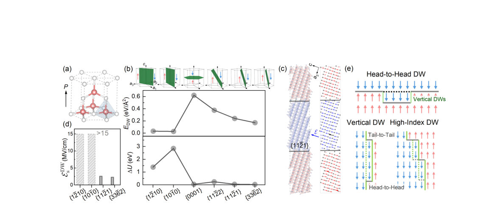
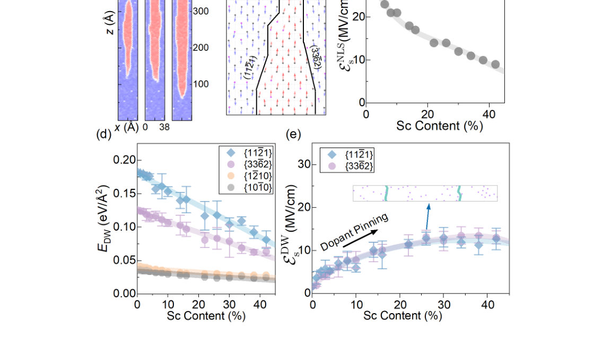
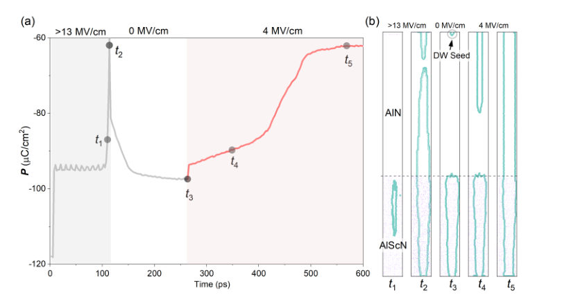
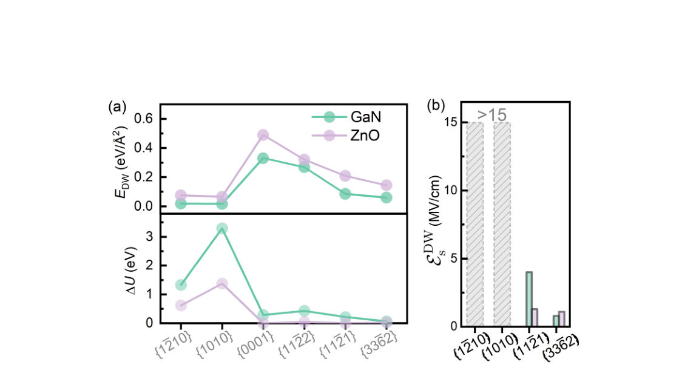
Main problem. Explaining the 'proximity ferroelectricity' puzzle, where undoped AlN layers undergo polarization reversal when in contact with ferroelectric AlScN layers.
Main result. The study identifies high-Miller-index domain walls as the driving mechanism, which are nucleated by Sc dopants in AlScN and then propagate rapidly through undoped AlN due to reduced pinning.
Method. The researchers used first-principles DFT calculations, Ab initio Molecular Dynamics (AIMD), and large-scale Machine-Learning Molecular Dynamics (MLMD) using the Deep Potential model.
Summary. This paper resolves the mystery of how undoped AlN can switch polarization when placed next to ferroelectric AlScN. The authors show that high-index domain walls, which are stabilized by Scandium, act as seeds that move easily into the undoped layers. This 'divide-and-conquer' mechanism allows for low-field switching across thick undoped layers. The findings suggest that controlling high-index interfaces is a powerful way to engineer ferroelectric properties in nitride-based electronics.
Model / system. The physical system consists of wurtzite-structure heterostructures, specifically AlN/AlScN multilayers, as well as comparisons to GaN and ZnO.
Key observables. Domain wall formation energy (E_DW), migration barriers (delta U), switching fields (E_DW^s), and Avrami exponents (n).
Important parameters / regimes. Scandium (Sc) concentration, electric field strength (ranging from low-field to 15 MV/cm), and Miller indices of domain walls.
Assumptions / limitations. The study assumes the validity of the Deep Potential model for large-scale atomistic simulations and focuses on the kinetic aspects of domain wall motion.
Figures summary. Fig 1 shows the AlN unit cell, the correlation between domain wall energy and migration barriers, and a schematic of the domain wall motion mechanics.
Paper structure. The paper introduces the proximity ferroelectricity puzzle, presents the discovery of mobile high-index walls via DFT and MLMD, details the dual role of Sc dopants in nucleation and pinning, and concludes with the 'divide-and-conquer' mechanism in heterostructures.
Wurtzite ferroelectrics such as scandium-doped aluminum nitride (AlScN) are promising for next-generation memory because of their compatibility with semiconductor processes and strong spontaneous polarization. Ferroelectric switching in these materials is typically attributed to doping-induced softening of the bulk switching barrier. However, recent reports of proximity ferroelectricity, in which undoped AlN layers up to 500 nm thick fully switch in AlN/AlScN multilayers, challenge this view. Here, we reveal an alternative switching mechanism mediated by high-Miller-index domain walls, long overlooked due to their complex geometry and presumed instability. Using first-principles calculations and machine-learning molecular dynamics simulations, we show that these walls, once nucleated, migrate with exceptionally low barriers. The Sc dopants play a dual role: they stabilize high-index walls and thereby promote nucleation, while also introducing pinning that hinders wall motion. In multilayers, our simulations demonstrate that mobile domain walls nucleated in AlScN can propagate deep into adjacent AlN, where they move easily without dopant pinning, enabling low-field switching across thick undoped layers. This microscopic divide-and-conquer mechanism resolves the puzzle of proximity ferroelectricity and highlights high-index interfaces as an underexplored lever for controlling ferroelectric switching.
Authors: Shantal Adajian, Fanghao Zhang, Zeyu Xiang, Tanay Tak, Miguel Zepeda-Rosales, Nikhil Tulshibagwale, Kirk Fields, Bolin Liao
Type: both · Category: disordered systems and neural networks · PDF: https://arxiv.org/pdf/2604.25287v1
Analysis basis: full PDF text, analyzed in chunks
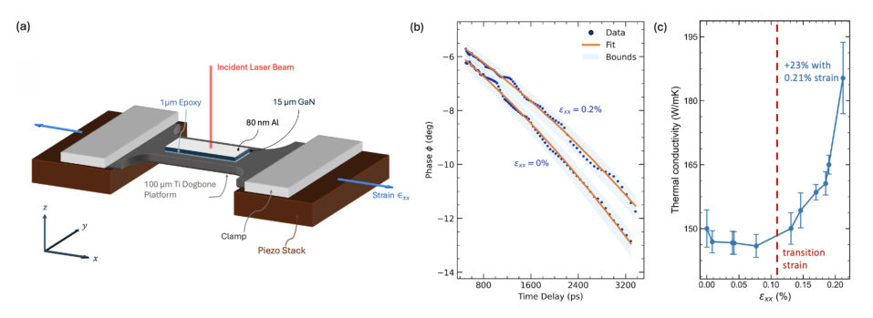
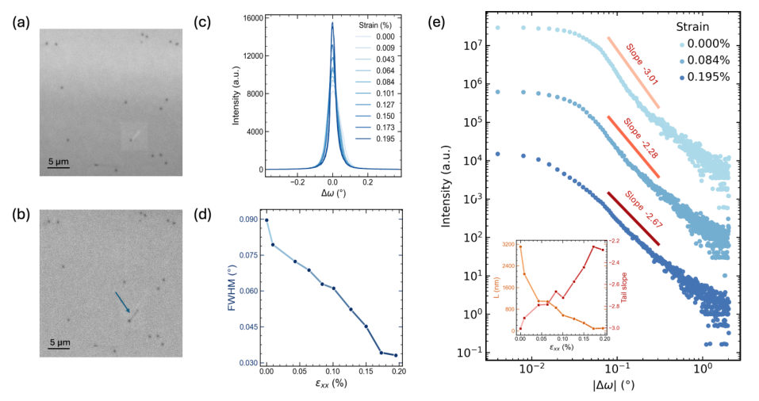
Main problem. Investigating whether the thermal transport in GaN can be dynamically and reversibly controlled by using elastic strain to reorganize dislocation ensembles.
Main result. A 23% enhancement in thermal conductivity was observed under only 0.21% uniaxial tensile strain, driven by the strain-induced screening and ordering of dislocation strain fields.
Method. The study combines in situ time-domain thermoreflectance (TDTR), high-resolution x-ray diffraction (HRXRD), Raman spectroscopy, and cathodoluminescence imaging with DFT and phonon Boltzmann transport simulations.
Summary. This paper demonstrates that the thermal conductivity of GaN can be reversibly increased by 23% through the application of very small amounts of elastic strain. Instead of reducing the number of defects, the strain causes existing dislocations to reorganize into more ordered, screened configurations that scatter phonons less effectively. This work introduces dislocation correlations as a new, tunable degree of freedom for controlling heat transport in crystalline solids.
Model / system. The physical system is c-plane Gallium Nitride (GaN) thin films containing threading dislocation ensembles, manipulated via a uniaxial strain platform using piezoelectric stacks.
Key observables. Thermal conductivity, dislocation density, dislocation correlation range, XRD diffuse scattering power law, and Raman phonon linewidth.
Important parameters / regimes. Uniaxial tensile strain (up to 0.21%), dislocation density (10^7-10^10 cm^-2), and a strain threshold of ~0.1%.
Assumptions / limitations. Dislocation-related phonon scattering is approximated via the Carruthers expression, and the measured thermal response is assumed to reflect bulk transport rather than surface effects.
Figures summary. Figure 1 shows the experimental setup and the increase in thermal conductivity with strain; Figure 2 shows CL maps of dislocations before and after strain cycling; Supplemental figures show XRD rocking curves, Raman spectra, and FEM strain simulations.
Paper structure. The paper introduces the problem of static defects, presents the experimental strain platform, details the thermal and structural measurements (TDTR, XRD, Raman), provides computational validation (DFT, BTE), and concludes with the mechanism of dislocation reorganization.
Crystalline defects are generally regarded as static phonon scatterers that irreversibly suppress thermal transport. Here we show that elastic strain can dynamically and reversibly reorganize dislocation ensembles and strongly modify heat conduction. Using in situ strain-dependent time-domain thermoreflectance measurements, we observe a reversible enhancement of thermal conductivity in GaN by 23% under only 0.21% uniaxial strain. High-resolution x-ray diffraction reveals progressive narrowing of the symmetric (0002) reflection together with a crossover of the diffuse scattering tails from a $q^{-3}$ to a $q^{-2}$ power law, indicating a strain-induced change in the statistical correlations of threading dislocations. Raman spectroscopy further shows a non-monotonic evolution of the $E_{2}^{\mathrm{high}}$ phonon linewidth, with a minimum near the same threshold strain at which thermal conductivity sharply increases. These results support a picture in which elastic strain promotes reversible screening and ordering of long-range dislocation strain fields, thereby reducing phonon scattering. Our work establishes defect correlations as a tunable degree of freedom for controlling thermal transport in crystalline solids.
Authors: Wei Ma, Dengpan Ma, Zhiheng Lv, Zhifeng Liu
Type: theory · Category: strongly correlated electrons · PDF: https://arxiv.org/pdf/2604.25658v1
Analysis basis: full PDF text, analyzed in chunks
Main problem. The challenge is to achieve efficient, all-electrical control of spin and magnetic degrees of freedom in spintronics without relying on external strain, valley polarization, or external magnetic fields.
Main result. The authors propose a Spin-Axis-Layer Locking (SALL) paradigm in a twisted bilayer of CuBr2 that enables 100% spin polarization and near-unity charge-to-spin conversion efficiency via electrostatic gating.
Method. The study uses first-principles DFT calculations to identify the material properties and a tight-binding Hamiltonian model to simulate transport and symmetry properties.
Summary. This paper introduces a new way to control spin in a material called an altermagnetic semiconductor. By twisting two layers of CuBr2 by 90 degrees, the researchers created a state where the spin of an electron is tied to both the specific layer it is in and the direction it is moving. This 'locking' allows for highly efficient electrical switching of spin currents using only a gate voltage, potentially leading to much lower-power spintronic devices.
Model / system. A bilayer system formed by vertically stacking two quasi-1D ferromagnetic CuBr2 monolayers with a 90-degree twist, creating an A-type altermagnetic state.
Key observables. Spin polarization (eta), conductivity (longitudinal and transverse), directional polarization ratio (delta), and effective spin Hall angle (theta_SH).
Important parameters / regimes. Curie temperature (Tc approx 38.6 K), exchange splitting (Delta_V = 3.45 eV, Delta_C = 0.58 eV), and electron-doped vs. hole-doped regimes.
Assumptions / limitations. The layers are assumed to be decoupled due to a large van der Waals gap, and the transport is modeled using a minimal tight-binding Hamiltonian.
Figures summary. Figure 4 shows the angular dependence of conductivities, the tunability of longitudinal spin polarization with electric field angle, and the charge-to-spin conversion efficiency.
Paper structure. The paper introduces the limitations of existing BAMS systems, proposes the SALL paradigm using a 90-degree twisted CuBr2 bilayer, demonstrates the symmetry and electronic structure via DFT, and analyzes transport properties and switching capabilities via tight-binding modeling.
Electrical control of spin and magnetic sublattice degrees of freedom is essential for multifunctional and low-power spintronic devices. Bipolar altermagnetic semiconductors (BAMSs)-characterized by opposite spin polarizations at the valence and conduction band edges-offer such control, yet known systems require external strain and sizable valley polarization for gate-tunable switching. Here, we propose a universal spin-axis-layer locking (SALL) paradigm to overcome these limitations. By stacking two quasi-1D ferromagnetic monolayers with a 90 degrees twist, the bilayer reconstructs altermagnetic symmetry, yielding an intrinsic BAMS state where carrier spin is locked to specific layers and transport directions. Using synthesized CuBr2 monolayers as proof-of-concept, we demonstrate via first-principles calculations a robust BAMS state. Electrostatic gating enables simultaneous, reversible switching of carrier type, spin, and active layer, generating fully spin-polarized axial charge currents and directionally controllable pure spin currents with near-unity charge-to-spin conversion efficiency. This SALL model establishes a versatile, strain-independent strategy for advanced all-electrical altermagnetic devices.
Authors: Peter Ludwig Rodríguez-Kessler
Type: theory · Category: other · PDF: https://arxiv.org/pdf/2604.25908v1
Analysis basis: full PDF text, analyzed in chunks
Main problem. The study investigates the structural stability, electronic structure, and bonding characteristics of silver-doped boron clusters, specifically B18Ag2.
Main result. The global minimum is identified as a bent double-ring structure of two stacked B9 rings stabilized by Ag atoms, featuring aromatic-like sigma-delocalization and weak Ag-B electrostatic interactions.
Method. Density Functional Theory (DFT) using ORCA 6.0.0 with PBE0 and omegaB97X-D3 functionals, combined with basin-hopping global optimization and real-space bonding analyses (ELF, RDG, MEP).
Summary. This paper explores how silver doping stabilizes boron nanostructures by forming a bent double-ring motif. Using DFT and global optimization, the authors show that the stability is driven by electron delocalization within the boron framework. The silver atoms act as axial stabilizers through weak electrostatic interactions. The study provides insights into the electronic and optical properties of metal-doped boron clusters, which could be relevant for designing new nanostructures.
Model / system. The physical system is the B18Ag2 cluster, a silver-doped boron nanostructure consisting of two stacked B9 rings with Ag atoms positioned axially.
Key observables. UV-Vis absorption spectrum, IR vibrational spectrum, electron localization function (ELF), reduced density gradient (RDG), and molecular electrostatic potential (MEP).
Important parameters / regimes. Relative energies of isomers (eV), vibrational frequencies (cm-1), and electronic transition energies (eV).
Assumptions / limitations. The study focuses on the B18M2 size regime and does not explore the interaction of Ag with larger boron clusters or other metal compositions.
Figures summary. Figure 1 shows the lowest energy isomers; Figure 2 displays calculated IR and UV-Vis spectra; Figure 3 presents the RDG isosurface for multicenter bonding; Figure 4 shows the MEP mapped onto the electron density.
Paper structure. The paper follows a logical progression from structural optimization and isomer energy comparison to detailed electronic, optical, and vibrational analysis, concluding with a discussion on the role of coinage-metal doping.
The structural stability, electronic structure, and bonding characteristics of the silver-doped boron cluster B18Ag2 were investigated using density functional theory (DFT) combined with global optimization techniques. Basin-hopping searches identify a bent double-ring structure as the global minimum, consisting of two stacked B9 rings symmetrically stabilized by Ag atoms located above and below the boron framework. The UV-Vis absorption spectrum exhibits weak transitions in the near-infrared region and intense bands in the visible and near-ultraviolet regions, reflecting delocalized electronic excitations within the boron framework. Charge analysis indicates moderate electron redistribution from Ag atoms to the boron scaffold. Real-space bonding analyses based on the electron localization function (ELF), reduced density gradient (RDG), and molecular electrostatic potential (MEP) reveal that bonding is dominated by {$σ$}-delocalization over the boron skeleton, while Ag-B interactions are weak, non-directional, and primarily electrostatic. The continuous annular electron delocalization within the double-ring structure suggests an aromatic-like character. These findings establish B18Ag2 as a silver-stabilized boron double-ring cluster in which global electron delocalization governs structural stability, while Ag atoms act as axial stabilizing centers that modulate the electronic structure. This work provides new insight into the role of coinage-metal doping in stabilizing extended boron nanostructures.
Authors: Zhenxing Dai, Menglin Huang, Xin-Gao Gong, Shiyou Chen
Type: theory · Category: other · PDF: https://arxiv.org/pdf/2604.25621v1
Analysis basis: full PDF text, analyzed in chunks
Main problem. The study aims to resolve the debate regarding the microscopic nonradiative recombination mechanism of substitutional platinum (PtSi) in silicon and determine if its donor and acceptor levels are the primary recombination-controlling states.
Main result. The researchers found that both donor and acceptor levels of PtSi exhibit large capture cross sections, making it an effective recombination center, and that accounting for symmetry-equivalent Jahn-Teller configurations is crucial for matching experimental values.
Method. First-principles calculations using Density Functional Theory (DFT) with the HSE hybrid functional and VASP, combined with nonradiative multiphonon theory and the Climbing Image Nudged Elastic Band (CI-NEB) method.
Summary. This paper investigates how platinum impurities in silicon act as efficient centers for nonradiative carrier recombination. By using advanced first-principles simulations, the authors show that the capture of electrons and holes is driven by specific electronic transitions at donor and acceptor levels. A key finding is that the efficiency of this process is highly dependent on Jahn-Teller distortions and the inclusion of symmetry-equivalent defect configurations. The results provide a microscopic understanding that aligns well with experimental observations of carrier lifetime in silicon power devices.
Model / system. The physical system is substitutional platinum (PtSi) impurities in a silicon (Si) crystal lattice, specifically focusing on deep-level defects that introduce donor and acceptor levels within the band gap.
Key observables. Formation energies, transition levels (2+/+, +/0, 0/-), carrier capture cross sections for electrons and holes, and Pt-Si bond lengths.
Important parameters / regimes. Jahn-Teller distortion symmetries (Td, D2d, C2v), capture cross section magnitudes (10^-15 to 10^-14 cm^2), and temperature-dependent capture behavior.
Assumptions / limitations. Neglected spin-orbit coupling due to negligible effects; use of the harmonic approximation for effective phonon energy; use of a semiclassical picture for carrier capture via potential energy surface crossing.
Figures summary. Figure 1 shows equilibrium atomic structures and energy level diagrams for different charge states; Figure 2 shows calculated formation energies and a comparison of transition levels with experimental data; Figure 3 includes configuration coordinate diagrams and potential energy surfaces.
Paper structure. The paper introduces the problem of PtSi recombination, details the DFT and multiphonon theory methods, presents structural and energetic results (transition levels), discusses the impact of Jahn-Teller distortions on capture cross sections, and concludes with the implications for recombination efficiency.
Platinum (Pt) is widely used for carrier-lifetime control in silicon power devices, yet the microscopic nonradiative recombination mechanism of the substitutional platinum ($\text{Pt}_\text{Si}$) dopant remains debated. Using first-principles calculations combined with nonradiative multiphonon theory, we systematically investigate the electronic structures and carrier capture dynamics of $\text{Pt}_\text{Si}$. Our results show that both the donor ($+/0$) and acceptor ($0/-$) levels of $\text{Pt}_\text{Si}$ exhibit large capture cross sections for electron and hole carriers, thereby making $\text{Pt}_\text{Si}$ an effective recombination center. Notably, the calculated capture cross sections are sensitive to the symmetry-equivalent defect configurations with different Jahn-Teller distortions. By accounting for two different $D_{2d}$ configurations of neutral $\text{Pt}_\text{Si}$ during transitions properly, our calculated carrier capture cross sections align well with experimental values. This work provides a microscopic picture of the carrier capture processes induced by $\text{Pt}_\text{Si}$ and emphasizes the importance of symmetry-equivalent configurations in defect-assisted nonradiative recombination.
Authors: Taegyeong Kim, Youngtak Kim, Sathya Sheela Subramanian, Geun Ho Gu
Type: both · Category: disordered systems and neural networks · PDF: https://arxiv.org/pdf/2604.25454v1
Analysis basis: full PDF text, analyzed in chunks
Main problem. The study investigates the failure of the 'homogeneous surface' assumption in predicting the catalytic activity of high-entropy alloys (HEAs) by neglecting thermodynamic surface reconstruction.
Main result. Thermodynamically annealed surfaces, which account for surface segregation and ordering, accurately reproduce experimental activity landscapes, whereas homogeneous models fail and misidentify active compositions.
Method. The researchers used a Crystal Graph Convolutional Neural Network (CGCNN) to evaluate energies in Monte Carlo Metropolis annealing simulations, comparing these to experimental data from a sputtered combinatorial library characterized via SECCM and EDX.
Summary. This paper demonstrates that predicting the catalytic performance of high-entropy alloys requires accounting for surface reconstruction rather than assuming a random, homogeneous mixture. By using machine-learning-accelerated Monte Carlo simulations, the authors show that thermodynamic annealing leads to surface segregation that narrows the distribution of adsorption energies toward a catalytically favorable state. This finding identifies a critical failure in current screening models that neglect the chemically selective interfaces formed by elemental enrichment. Ultimately, the work establishes that the thermodynamically selected surface state is the true governing parameter for predictive catalysis in multicomponent alloys.
Model / system. The physical system is a multicomponent high-entropy alloy (Ru-Rh-Pd-Pt-Ir) featuring a vertically stratified surface structure driven by the competition between segregation energetics and configurational entropy.
Key observables. Catalytic activity landscape (OH adsorption energy), surface compositional deviation (D), Warren-Cowley short-range order parameter, and rank correlation coefficients (Spearman, Kendall, Pearson).
Important parameters / regimes. Annealing temperature (ranging from 4000 K to 298 K), surface segregation energy, and the Sabatier optimum for OH adsorption.
Assumptions / limitations. The study assumes that the catalytic activity can be modeled via a linear relationship between adsorption energy and nearest-neighbor elemental composition.
Figures summary. Figure 1 compares experimental and predicted activity maps and shows the failure of homogeneous models; Figure 2 details segregation energies and temperature-dependent surface evolution; Figure 3 shows the contraction of adsorption energy distributions toward the Sabatier optimum; Figure 4 relates adsorption energy shifts to surface compositional deviation.
Paper structure. The paper introduces the problem of model validity, presents experimental and simulated activity maps, analyzes the thermodynamic drivers of surface reconstruction (segregation and ordering), quantifies the predictive error of homogeneous models, and concludes with the establishment of a validity boundary for such models.
High-entropy alloys are widely modeled as homogeneously mixed surfaces, yet the validity of this assumption for catalytic prediction remains unclear. Here, we reproduce high-throughput experimental measurements using thermodynamic simulations and show that surface ordering is essential for accurately capturing the compositional activity landscape. Homogeneous surface models fail to reproduce experimentally observed trends and, in some regimes, perform at or below the random-selection baseline. In contrast, thermodynamically annealed surfaces restore meaningful agreement with the experimental activity landscape and substantially improve the recovery of active compositions. Segregation energetics reveal strong surface enrichment of preferred elements, producing chemically selective interfaces that collapse the broad adsorption-energy spectrum of random alloys into a narrower distribution of catalytically favorable sites. By linking predictive error to the degree of short-range order, we identify a validity boundary for homogeneous models and establish the thermodynamically selected surface state as a governing parameter for predictive catalysis in multicomponent alloys.
Authors: Elliot Perviz, Antonio Cammarata
Type: theory · Category: other · PDF: https://arxiv.org/pdf/2604.25576v1
Analysis basis: full PDF text, analyzed in chunks
Main problem. Understanding the microscopic mechanisms that determine the magnitude and direction of lattice thermal conductivity (LTC) in transition metal dichalcogenide (TMD) heterobilayers and how doping can tune these properties.
Main result. Pristine heterobilayers exhibit isotropic in-plane LTC, while W-doped systems exhibit reduced and anisotropic LTC where the direction of maximum transport can be tuned via doping and temperature.
Method. First-principles calculations using VASP and phono3py, employing the 'relaxon' framework to solve the linearized Boltzmann transport equation and analyzing phonon-based descriptors.
Summary. This study investigates how the lattice thermal conductivity in TMD heterobilayers can be controlled. By using a 'relaxon' framework, the authors show that thermal transport is linked to phonon group velocity and layer localization. They demonstrate that while pristine layers are isotropic, introducing dopants breaks symmetry, allowing for the tuning of the direction of maximum heat flow. This provides a potential pathway for designing 2D materials with customized thermal properties.
Model / system. Pristine and W-doped MX2-M'X2 transition metal dichalcogenide (TMD) heterobilayers, specifically focusing on Mo-W-S-Se-Te configurations.
Key observables. Lattice thermal conductivity (LTC), phonon group velocity, layer localization, phonon lifetime, mean free path, and thermal viscosity.
Important parameters / regimes. Temperature, mass contrast between layers, dopant concentration (x), and lattice mismatch.
Assumptions / limitations. Neglects extrinsic scattering (isotopes, defects, boundaries) for pristine layers; assumes the validity of the relaxon framework for heat transport.
Figures summary. Figure 1 shows atomic arrangements of homobilayers, heterobilayers, and doped bilayers; Figure 2 plots LTC vs. temperature; Figure 3 shows correlations between LTC and phonon descriptors; Figure 5 illustrates the relationship between relaxon velocity and phonon group velocity.
Paper structure. The paper introduces the problem of thermal transport in TMDs, describes the first-principles and relaxon-based methodology, analyzes pristine heterobilayers to establish phonon-based descriptors, investigates the effects of W-doping on anisotropy, and concludes with implications for high-throughput material design.
We investigate the nanoscale mechanisms determining lattice thermal conductivity (LTC) of pristine and W-doped MX$_2$-M$^\prime$X$^\prime_2$ transition metal dichalcogenide heterobilayers from first principles, using the exact solution of the linearised Boltzmann transport equation in both phonon and relaxon bases. Pristine heterobilayers exhibit isotropic in-plane LTC with preserved ordering across temperature. Relaxon analysis identifies descriptors linking LTC to phonon properties such as the phonon group velocity and layer localisation. While systems with lighter atoms generally favour higher LTC, a sufficiently large mass contrast is required to induce layer localisation of the transport-relevant vibrational modes. Further, we show through the thermal viscosity that the relative distribution of vibrational states between metal/non-metal sublattices influences the balance between Normal and Umklapp scattering processes. On the other hand, doped systems exhibit reduced and anisotropic in-plane LTC, retain a well-defined layer character, but are strongly affected by enhanced phonon-phonon scattering due to mass disorder. Notably, we find that both configuration and temperature dictate the direction of maximum thermal transport, which opens the possibility to tune the direction of maximum (and minimum) conductivity via doping in novel 2D functional materials. Thanks to its general formulation, the analysis protocol can be readily extended to other van der Waals heterostructures, and the descriptors may be implemented in high-throughput engines to identify promising layered materials with tailored thermal transport characteristics.
Authors: Moritz Flemming, Paul Zechel, Rakesh R. Nair, Emil Mahnke, Markus Löffler, Alyna Ong, Bernd Rellinghaus, Lukas M. Eng, Karl Leo, Hans Kleemann
Type: experiment · Category: other · PDF: https://arxiv.org/pdf/2604.25830v1
Analysis basis: full PDF text, analyzed in chunks
Main problem. Developing a universal, biocompatible, and stable electrolyte for Organic Electrochemical Transistors (OECTs) that can be easily printed using both inkjet and screen-printing methods.
Main result. The authors developed a UV-curable polymer matrix that serves as a universal basis for electrolytes, enabling high-stability, biocompatible, and printable OECTs, including a demonstration on a leaf substrate.
Method. The researchers used a polymer matrix (PVA, DMSO, PEGDA, etc.) combined with ionic liquids, employing both inkjet and screen-printing techniques followed by UV-induced cross-linking and electrochemical characterization.
Summary. This paper presents a new material platform for creating printable electrolytes used in Organic Electrochemical Transistors. By using a UV-curable polymer matrix, the authors created a system that can be tuned for either inkjet or screen printing while maintaining high biocompatibility and long-term stability. The electrolyte can remain stable in ambient air for over 30 days, and the technology was successfully demonstrated by printing a transistor directly onto a leaf. This work is significant for the development of low-cost, flexible, and biodegradable bioelectronics.
Model / system. The experimental platform consists of Organic Electrochemical Transistors (OECTs) using Organic Mixed Ionic Electronic Conductors (OMIECs), specifically PEDOT:PSS, with various electrolyte formulations and substrates ranging from glass to biodegradable leaves.
Key observables. Transconductance, on/off ratio, drain current stability, viscosity, ionic conductivity, and device lifetime.
Important parameters / regimes. Viscosity (for printing regime selection), threshold voltage, and device stability over 30 days in ambient air.
Figures summary. Figure 1 shows the chemical components of the material basis; Figure 3 presents transfer/transconductance characteristics, comparisons of different IGI formulations, and stability analysis; Figure 4 demonstrates the transfer characteristics and micrograph of the OECT on a leaf substrate.
Paper structure. The paper introduces the problem of electrolyte stability and biocompatibility, describes the development of the universal polymer matrix, details the printing and fabrication processes for different viscosity regimes, presents electrochemical and stability characterization, and concludes with a demonstration of a fully biocompatible device on a leaf.
Organic Electrochemical Transistors (OECTs) stand out for their interplay between ionic and electronic conduction, making them ideal analogues to biological synapses for neuromorphic computing and biosensing applications. Furthermore, they can be printed into integrated circuits on flexible substrates, enabling low-cost and high-throughput fabrication of complete electronic systems. However, most OECT electrolytes for integrated circuits still lack biocompatibility and suffer from rheology-related printing challenges. This paper presents a novel material basis that can be combined with an ionic liquid to fabricate an electrolyte for OECTs that only contains biocompatible materials. It allows rheological adjustments to enable the use of electrolyte in both inkjet and screen printing. Furthermore, the electrolyte is UV-curable, enabling it to transition into solid-state structures after printing. Extended ink and device lifetimes for screen-printed structures enable the fabrication of advanced OECTs that can operate in ambient air for over 30 days after fabrication. Ultimately, a fully screen-printed transistor using only biocompatible materials on a leaf substrate is shown
Authors: Diyi Cheng, Tim Kodalle, Anika T. Promi, Ansuman Halder, Raphael F. Moral, Madeline Grass, Venkata S. Avvaru, Haegyeom Kim, Carolin M. Sutter-Fella, Haimei Zheng
Type: experiment · Category: disordered systems and neural networks · PDF: https://arxiv.org/pdf/2604.24941v1
Analysis basis: full PDF text, analyzed in chunks
Main problem. Understanding the complex, multiscale crystallization dynamics and transformation pathways of disordered rocksalt (DRX) oxides during thermally activated sol-gel synthesis.
Main result. The study identifies two distinct nanoscale crystallization pathways: a classical multi-step transition through stable intermediates and a 'kinetic shortcut' where nanocrystals dissolve into an amorphous matrix to directly precipitate the DRX structure.
Method. A multiscale approach combining in situ liquid cell heating TEM, in situ synchrotron X-ray diffraction (SXRD), and FTIR spectroscopy, supported by a custom Python-based automated image processing pipeline for phase mapping.
Summary. This paper investigates how disordered rocksalt oxides form during the sol-gel synthesis process. By using in situ electron microscopy and synchrotron X-ray diffraction, the researchers discovered that while the bulk material follows a standard multi-step phase transition, certain nanoscale regions undergo a 'kinetic shortcut' through an amorphous state. This finding reveals that local chemical heterogeneity in the precursor can drive unexpected crystallization pathways. Understanding these dynamics is crucial for controlling material homogeneity and optimizing the synthesis of high-performance battery cathodes.
Model / system. The physical system is the thermally activated sol-gel synthesis of Li1.2Mn0.4Ti0.4O2 (LMTO), a disordered rocksalt-type cathode material for lithium batteries, evolving from molecular precursors through a xerogel state to crystalline particles.
Key observables. Nanoscale phase distribution maps, crystallization trajectories, phase volume fractions, d-spacings, and chemical coordination signatures (FTIR).
Important parameters / regimes. Temperature regimes (pyrolysis at 25-400 C and calcination at 400-800 C), chemical microenvironments in the gel, and particle size scales (4-6 nm clusters).
Assumptions / limitations. TEM imaging was subject to sample drift requiring frame removal; the processed video length may not represent the total recording time.
Figures summary. Figure 1 shows the experimental workflow and precursor characterization (FTIR, DLS, STEM-EDS); Figure 2 details the TEM setup and automated image processing pipeline; Figure 5 presents SXRD contour plots and quantified phase evolution vs. temperature.
Paper structure. The paper introduces the sol-gel synthesis potential, describes the multiscale characterization workflow, details the chemical/colloidal nature of the precursor, presents the automated phase mapping pipeline, reports the discovery of dual nanoscale crystallization pathways, compares local TEM findings with bulk SXRD results, and concludes with electrochemical performance.
Sol-gel synthesis is a wet-chemical processing route for the fabrication of functional materials offering control over composition, morphology, and microstructure at relatively low processing temperatures compared to conventional solid-state synthesis methods. While the sol-gel process initiates with intermixed molecular precursors, the transformation pathways at the early nucleation stage are insufficiently understood. Here, the chemical and structural transformation of disordered rocksalt (DRX) Li1.2Mn0.4Ti0.4O2 (LMTO), a promising cathode material for lithium batteries, is studied by multiscale characterization tools. In situ heating transmission electron microscopy (TEM) using a liquid cell visualizes and identifies crystallization pathways at nanoscale. While some regions follow a classical multi-step transition through thermodynamically stable intermediates, others exhibit a kinetic shortcut in which intermediate nanocrystals dissolve into a localized amorphous matrix that directly precipitates the DRX structure. Macroscale FTIR corroborates the findings to be related to chemically distinct microenvironments in the gel precursor, with transition metal ions more strongly incorporated into the acetate-coordinated network than lithium. Although in situ heating TEM captures diverse local transformation pathways, in situ SXRD indicates that the macroscopic transformation proceeds predominantly through spinel LMTO and lithium titanite intermediates toward DRX-LMTO. The findings shed light on the spatiotemporal chemical and structural transformations in sol-gel derived DRX-LMTO materials, and call for fine tuning of such sol-gel chemistries to manipulate the crystallization pathways and achieve target material homogeneity more efficiently.